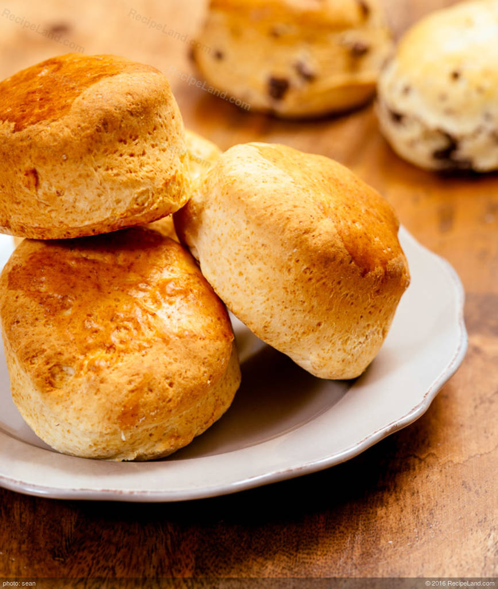

Banana Scones

Description
Sweet and Delicious Banana Scones! It's perfect for breakfast. Freshly baked is outside crispy, inside soft and fluffy.
The Next day, it becomes moist and heavy. Please store it in an airtight container to prevent drying.
Ingredients
- 125 g (4.4 oz) bread flour
- 125 g (4.4 oz) cake flour
- 8 g (2 tsp) baking powder
- 40 g (1.4 oz) granulated sugar
- 1 g (1/5 tsp) salt
- 50 g (1.76 oz) unsalted butter, well-chilled, diced
- 1 egg (about 50g, 1.76 oz)
- 100 g / 3.5 oz banana milk (pureed 1 ripe banana and milk mixture)
- egg for brushing
- (125 g cake flour and 125g bread flour can be replaced with 250g (8.8 oz) of all-purpose flour)
Topping
- 100 g (3.5 oz) ripe banana, diced
- 2 Tbsp boiling water
- 1 Tbsp granulated sugar
- 1/2 Tbsp brandy
Baking temperature and time
- 200 ℃ / 392 F for 18 minutes
- Preheating; 220℃ / 428 F
Steps
- Dice unsalted butter into about 1 cm / 0.4 inch.
Use a hand blender or a fork to mash a banana and mix it with milk. Add an egg to the mixture and use a whisk to stir until smooth.
- Prepare toppings. Put boiling water, sugar, and brandy in a small bowl, and stir well until the sugar dissolves. Add the diced bananas, mix roughly, and set aside.
- Put bread flour, cake flour, baking powder, sugar, and salt in a large bowl. Use a spoon to stir well.
Add the diced butter, and use your hands to crush and rub the butter cubes until the mixture turns yellowish and looks like dry crumbs.
- Pour the banana, milk, and egg mixture over the flour mixture. Use a spatula to fold it roughly until it looks like little wet bread crumbs.
- Drain the diced bananas, and pat dry with paper towels. Put the dough on the floured work surface, and put the bananas over the dough.
- Knead gently about 20 times while mixing with the bananas until almost comes together.
Place it on plastic wrap, fold it in half, and gently press it to flatten, 3 times.
- Sprinkle flour on the top, and use a rolling pin to roll it out into 2 cm / 0.8 inch thick. Let it sit in a freezer for 20 minutes.
- Preheat an oven to 220℃ / 428 F.
Remove the dough from the fridge, and use a 6 cm (2.4'') mousse ring to cut it out. (If you flour lightly the edges of the ring, you can cut cleanly.) Arrange them on a parchment-lined baking sheet. Re-roll the dough scraps immediately and cut and arrange them on the baking sheet.
- Brush the top with the egg wash so as not to drip on the sides of the dough.
Lower the oven to 200 ℃ / 392 F and bake for 18 minutes until golden brown. Remove from the oven, and transfer them to a rack to cool a little.
- Freshly baked is outside crispy, inside soft and fluffy. Please store them in an airtight container to prevent drying.
The Next day, it becomes moist and heavy. It tastes good both freshly baked and the next day.